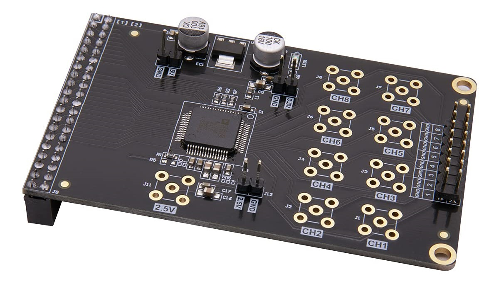
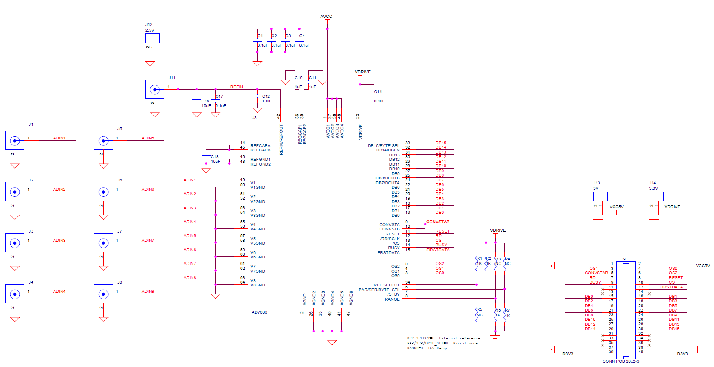
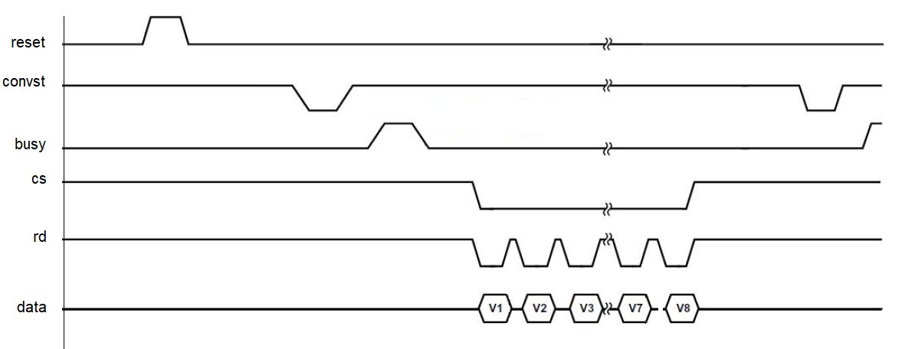

| Lecture | 21 |
| Class Objectives | An introduction to the AD7606 timing
and the datapath and control you will use to extract digitized samples
from the AD7606.
|
| Handout | AN706 Schematic |
AD7606 Interface
The AD7606 chip that you will interface to the Zynq SoC is housed on the
AN706 board manufactured by ALINX. The board, shown below, as a 40 pin
header on its lower surface that will mate with the 40 pin headers, J10 or
J11 on the ALINX AX7010 board.

The analog inputs applied to the 8x2 header on the top of the board. The,
slightly edited, schematic of the AN706 is shown below.

The 40 pin header, the interface between the AX7010 and AN706 boards is shown
at the lower right. Your hardware will be responsible for reading and
writing these signals so its essential that you understand how to manipulate
them.
Signals
In order to understand the function of the pins, we need to make the following
observations from the schematic.
- PAR/SER/BYTE SELECT = 0.
This means that you will have access to all 16-bits of the converted value
at the same time through the DB15:DB0 pins.
- The CONVST A, CONVST B pins are shorted together. This means that
all 8 channels are sampled at the same time.
- RANGE = 0. This means that the AD7606 will quantize the inputs over
at +5V to -5V range.
- VDRIVE is 3.3V. Note it's the output of the 1117-3.3 chip.
A quick search shows that the 1117 is a family low-dropout linear regulator
with individual chips offering different, fixed, output voltages. The "-3.3"
indicates that the chip on the AN706 board regulates to 3.3V.
I've taken, and modified, the following from
Table 6. Pin Function Descriptions
in the AD7606 technical documentation.
| Name | Number of bits | Explaination
|
| OS | 3
| Oversampling Mode Pins. Logic inputs. These inputs are used to select
the oversampling ratio. OS 2 is the MSB control bit, and OS 0 is the
LSB control bit. See the Digital Filter section for more details about
the oversampling mode of operation and Table 9 for oversampling bit decoding.
|
| Reset | 1
| Reset Input. When set to logic high, the rising edge of RESET resets
the AD7606. The device should receive a RESET pulse
directly after power-up. The RESET high pulse should typically be 50ns
wide. If a RESET pulse is applied during a conversion, the conversion
is aborted. If a RESET pulse is applied during a read, the contents
of the output registers reset to all zeros.
|
| CONVST | 1
| Conversion Start Input A, Conversion Start Input B. Logic inputs.
These logic inputs are used to initiate conversions on the analog input
channels. For simultaneous sampling of all input channels, CONVST A and CONVST
B can be shorted together, and a single convert start signal can be
applied. When the CONVST A and CONVST B pin transitions from low to high, the
front-end track-and-hold circuitry for the respective analog inputs is set to hold.
|
| CS | 1
| Chip Select. This active low logic input frames the data transfer.
When both CS and RD are logic low in parallel mode, the DB[15:0] output
bus is enabled and the conversion result is output on the parallel data
bus lines.
|
| RD/SCLK | 1
| Parallel Data Read Control Input When the Parallel Interface Is Selected
(RD). When both CS and RD are logic low in parallel mode, the output bus is
enabled.
|
| BUSY | 1
| Busy Output. This pin transitions to a logic high after both CONVST
A and CONVST B rising edges and indicates that the conversion process
has started. The BUSY output remains high until the conversion process
for all channels is complete. The falling edge of BUSY signals that
the conversion data is being latched into the output data registers
and is available to read immediatly. Any data read while BUSY is
high must be completed before the falling edge of BUSY occurs. Rising
edges on CONVST A or CONVST B have no effect while the BUSY signal is high.
|
| FIRSTDATA | 1
| We will ignore this output
|
Now let's look at a stylized version of these signals and how they
produce the output data.

The durations of the pulses is critical to the successful operation of the chip.
Looking over the technical documents produces the following values.
| Signal | Time Parameter | Description | Duration | 50Mhz clocks
|
| RESET | tRESET | RESET high pulse width | 20ns |
|
| CONV | t2 | Minimum CONVST x low pulse | 25ns |
|
| BUSY | tCONV | Oversampling off | 4us |
|
| RD LOW | t10 | RD low pulse width | 24ns |
|
| RD HIGH | t11 | RD high pulse width | 15ns |
|